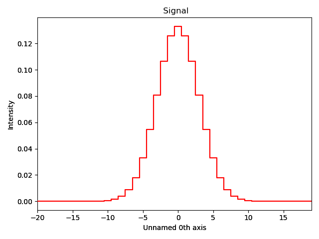
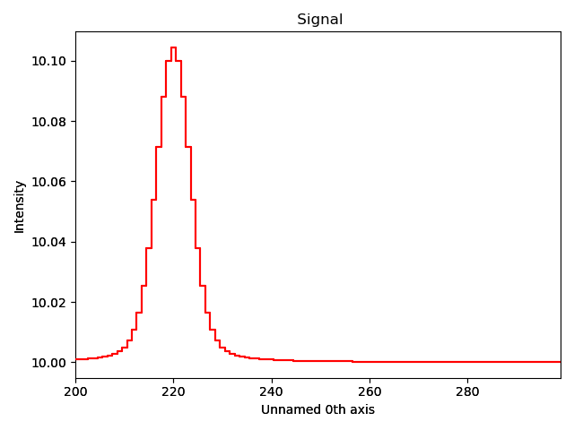
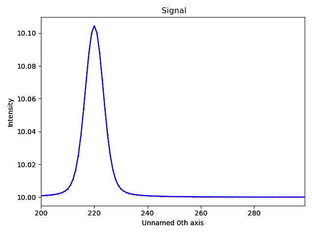
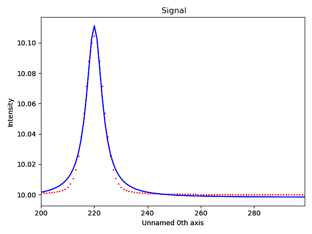

Note
Go to the end to download the full example code.
Implementation of a model supporting convolution of components#
This example illustrates how to implement a model supporting convolution.
Note
Model convolution has only been tested for 1D signals.
import hyperspy.api as hs
import numpy as np
Model class implementation#
Create a model class subclassing hyperspy.models.model1d.Model1D.
The subclass needs to implement the following API:
_convolution_axis_signal_to_convolveconvolved
The steps of how the convolution is implemented are explained in component convolution example.
from hyperspy.models.model1d import Model1D
from hyperspy.misc.axis_tools import calculate_convolution1D_axis
class ConvolvedModel1D(Model1D):
def __init__(self, signal1D, detector_response=None, **kwargs):
super().__init__(signal1D, **kwargs)
self._convolved = False
self._detector_response = None
self._convolution_axis = None
self.detector_response = detector_response
self._whitelist.update(
{
"_convolved": None,
"detector_response": ("sig", None),
}
)
def _set_convolution_axis(self):
"""
Set the convolution axis used to add padding before taking
the convolution.
"""
# Used during model fitting
self._convolution_axis = calculate_convolution1D_axis(
self.signal.axes_manager.signal_axes[0],
self.detector_response.axes_manager.signal_axes[0]
)
@property
def detector_response(self):
return self._detector_response
@detector_response.setter
def detector_response(self, signal):
if signal is not None:
self._detector_response = signal
self._set_convolution_axis()
self._convolved = True
else:
self._detector_response = None
self._convolution_axis = None
self._convolved = False
@property
def _signal_to_convolve(self):
# Used during model fitting
return self.detector_response
@property
def convolved(self):
# Used during model fitting
return self._convolved
Example signal#
We create a signal of a Lorentzian convolved with a Gaussian function, where the Lorentzian function is the measurement of interest and the Gaussian function a model for a detector response.
Generate a signal of the detector response:
g = hs.model.components1D.Gaussian(sigma=3)
g_signal = hs.signals.Signal1D(g.function(np.arange(-20, 20)))
g_signal.axes_manager.signal_axes.set(offset=-20)
g_signal.plot()

Generate an example signal using the same approach as in the implementation of a convolution for model fitting (see component convolution):
f = hs.model.components1D.Lorentzian(centre=220)
f_signal = hs.signals.Signal1D(f.function(np.arange(200, 300)))
f_signal.axes_manager.signal_axes.set(offset=200)
convolution_axis = calculate_convolution1D_axis(
f_signal.axes_manager.signal_axes[0], g_signal.axes_manager.signal_axes[0]
)
f_padded_data = f.function(convolution_axis)
f_signal.data = np.convolve(f_padded_data, g_signal.data, mode="valid") + 10
Plot signal composed of the convolution of a Lorentzian and a Gaussian function:
f_signal.plot()

Fit model with convolution#
m = ConvolvedModel1D(f_signal, detector_response=g_signal)
lorentzian_component = hs.model.components1D.Lorentzian()
lorentzian_component.estimate_parameters(f_signal, 200, 300)
offset_component = hs.model.components1D.Offset()
m.extend([lorentzian_component, offset_component])
The component of the model can be set to be convolved or not during model fitting. Specify that the Lorentzian is convolved:
lorentzian_component.convolved = True
offset_component.convolved = False
Show the results

ConvolvedModel1D:
CurrentComponentValues: Lorentzian
Active: True
Parameter Name | Free | Value | Std | Min | Max | Linear
============== | ======= | ========== | ========== | ========== | ========== | ======
A | True | 1.00000000 | 2.52436730 | 0.0 | None | True
centre | True | 220.0 | 6.35871489 | None | None | False
gamma | True | 1.00000000 | 1.06351101 | None | None | False
CurrentComponentValues: Offset
Active: True
Parameter Name | Free | Value | Std | Min | Max | Linear
============== | ======= | ========== | ========== | ========== | ========== | ======
offset | True | 10.0 | 3.77885029 | None | None | True
Fit model without convolution#
m2 = ConvolvedModel1D(f_signal)
lorentzian_component2 = hs.model.components1D.Lorentzian()
lorentzian_component2.estimate_parameters(f_signal, 200, 300)
offset_component2 = hs.model.components1D.Offset()
m2.extend([lorentzian_component2, offset_component2])
m2.fit()
m2.print_current_values()
m2.plot()

ConvolvedModel1D:
CurrentComponentValues: Lorentzian
Active: True
Parameter Name | Free | Value | Std | Min | Max | Linear
============== | ======= | ========== | ========== | ========== | ========== | ======
A | True | 1.25223018 | 0.02394927 | 0.0 | None | True
centre | True | 220.000597 | 0.05481220 | None | None | False
gamma | True | 3.52697183 | 0.08584569 | None | None | False
CurrentComponentValues: Offset
Active: True
Parameter Name | Free | Value | Std | Min | Max | Linear
============== | ======= | ========== | ========== | ========== | ========== | ======
offset | True | 9.99817205 | 0.00035862 | None | None | True
Total running time of the script: (0 minutes 1.430 seconds)